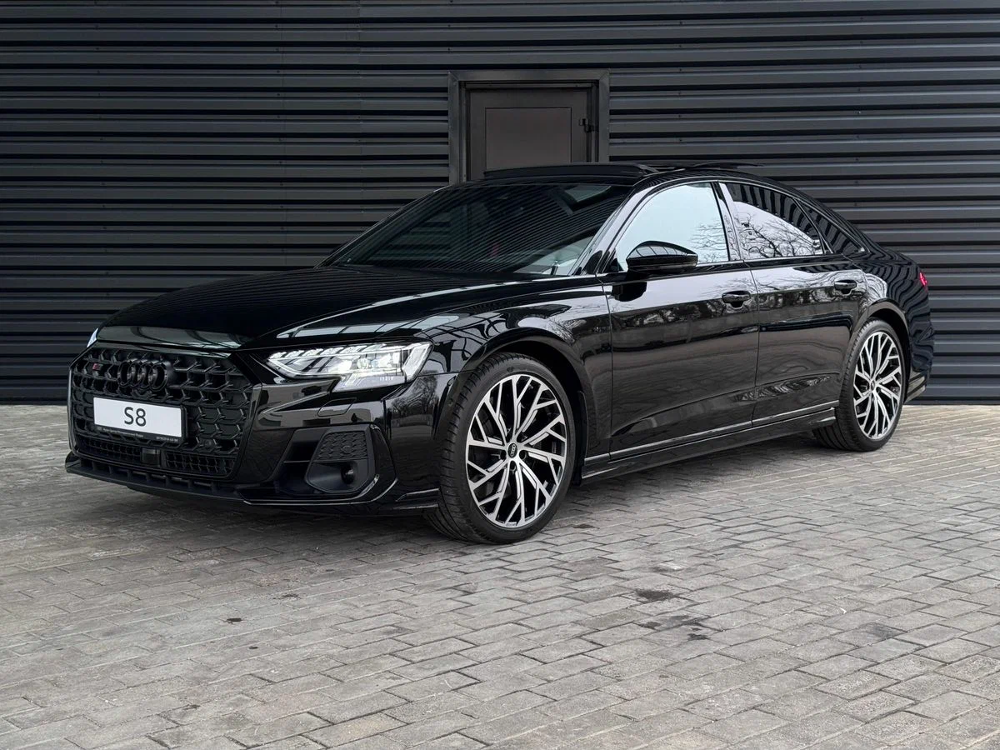
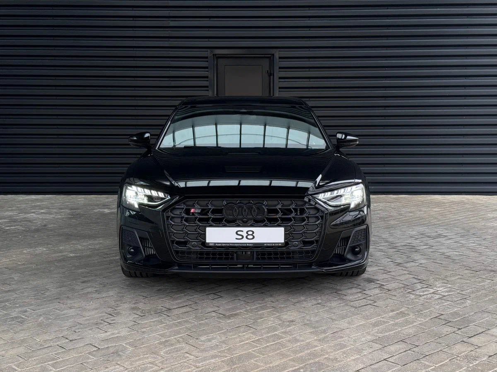
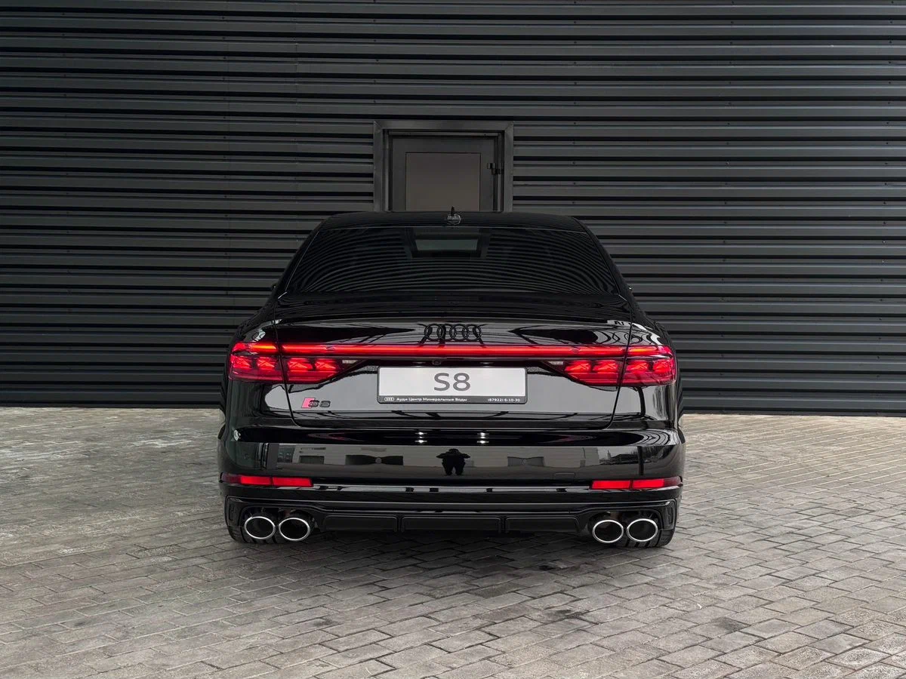

О модели
Audi S8 D5 — это люксовый спорт-седан, сочетающий в себе комфорт, передовые технологии и потрясающую динамику.
Характеристики
Двигатель: 4.0L V8 Twin-Turbo
Мощность: 571 л.с.
Разгон 0-100 км/ч: 3.8 сек
Максимальная скорость: 250 км/ч
Дизайн
Премиальный стиль с агрессивными спортивными акцентами, матричные LED-фары и роскошный интерьер с кожаной отделкой и новейшими технологиями.
Более подробная информация об этой машине

Нажав по картинке выше, вы можете перейти на сайт и ознакомиться с тем, что не увидели у нас.